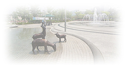

삼덕공원 기부 이야기
 2003년에 전재준 삼덕제지 회장은 350억원 이상에 달하는 삼덕제지 공장터를 시민을 위해 안양시에 무상으로 기부했다. 단 하나의 조건이라면 공장 굴뚝 만은 남겨 달라는 것이었다. 삼덕 공원은 그냥 평범해 보이지만 안양역 사거리에서 200미터 밖에 떨어지지 않은.. 말 그대로 안양시의 노른자위 땅이다. 이 자리에 집과 빌딩을 짓는다면 수백억원의 이익을 앉아서 벌 수 있는 곳이다.
2003년에 전재준 삼덕제지 회장은 350억원 이상에 달하는 삼덕제지 공장터를 시민을 위해 안양시에 무상으로 기부했다. 단 하나의 조건이라면 공장 굴뚝 만은 남겨 달라는 것이었다. 삼덕 공원은 그냥 평범해 보이지만 안양역 사거리에서 200미터 밖에 떨어지지 않은.. 말 그대로 안양시의 노른자위 땅이다. 이 자리에 집과 빌딩을 짓는다면 수백억원의 이익을 앉아서 벌 수 있는 곳이다.
순조롭지 않았던 공원 개장
- 지하 주차장 건설 계획
- 약속한 굴뚝 보존 폐기
- 방송 3사의 대서 특필
- 굴뚝을 대신한 상징물 조성
2003년에 공원 부지를 기부했지만 2009년이 되어서야 공원은 개장 할 수 있었다. 원래는 아무 조건 없이 시민들을 위한 공원 조성을 원했는데 안양시는 주민 편의 상 지하 주차장을 설치해야 한다면서 굴뚝도 철거를 해버렸다. 그래서 KBS, MBC, SBS 방송 3사에서 이 상황을 취재하고 기부자의 뜻과 다르게 추진 됨을 대서 특필 하였다. 결국 철거 된 굴뚝을 대신하여 굴뚝 모양의 상징물이 세워지고, 지하 주차장은 없던일로 마무리 되었다. (이후 2020년 지하주차장은 완공되었고 현재 운영중)
현재의 삼덕공원
공원에는 언제나 많은 분들이 산책을 하고 운동도하고 아이들과 어르신들의 놀이터가 되었다. 따듯한 날에는 더욱 많은 시민들이 이곳을 찾아서 휴식을 취한다. 밤에는 은은한 조명으로 은은한 안양의 밤을 비춘다. 공원 옆으로 흐르는 수암천은 자전거 도로와 산책로로 조성되어 안양 시민의 건강을 책임지고 있다.
안양 시민의 삶의 변화
이곳이 불과 몇년전 까지만 해도 공장이 있던 자리였고, 높은 담이 둘러처져 있던 곳이라고는 믿을 수 없는 멋진 공원이 조성 되면서 주변 도로도 2차선에서 4차선으로 확장 되었다. 연기와 분진 대신 신선한 나무와 풀냄새가 가득한 피톤치드는 안양 시민의 삶을 더욱 풍요롭게 해주고 있다.